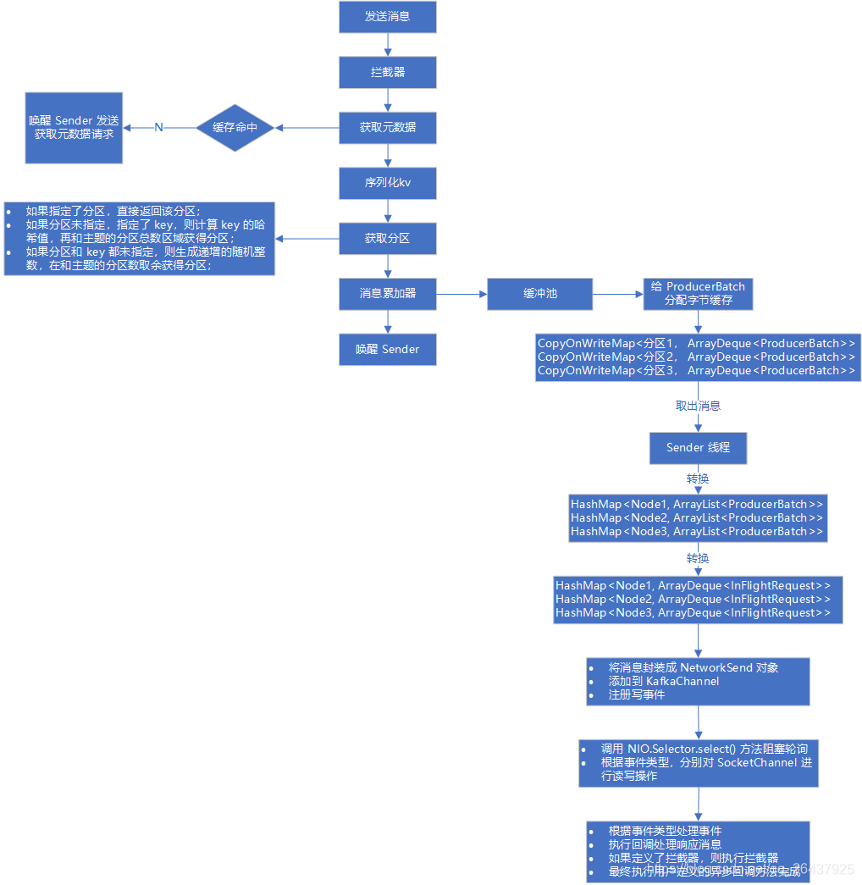
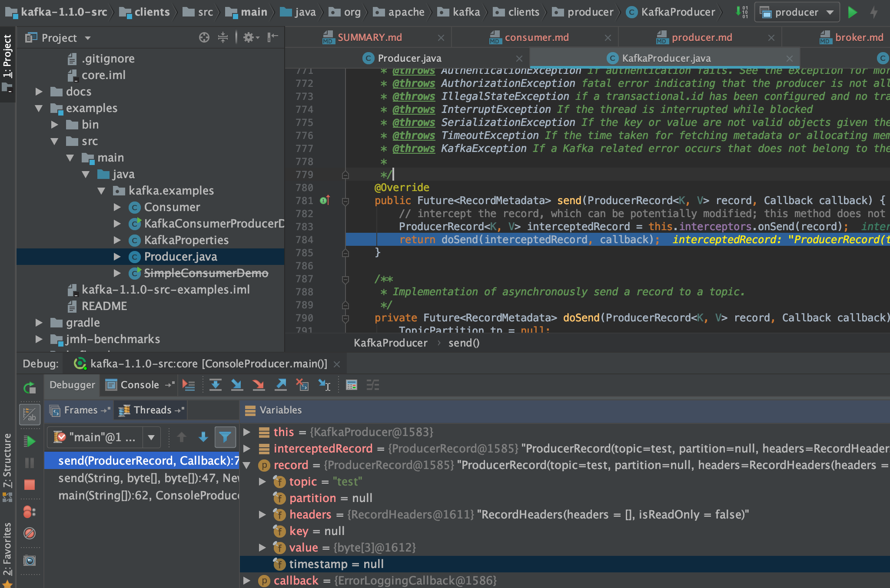

Producer
record,partition,offset,replication等概念
一个非常大的Topic可以被分成多个分区（partition）, 从而分配到多个broker中（分区可以存储在不同的服务器上，分区是对Topic中所包含数据集的物理分区）。kafka中的每一条消息（record）都会分配一个自增ID（Offset）。
一个partition中的消息可以顺序发给消费者，不保证多个partition有序
在数据持久化时，每条record都是根据一定的分区规则路由到对应的Partition中，并append在log文件的尾部
Partition是用来存储数据的，但并不是最小的数据存储单元。Partition下还可以细分成Segment，每个Partition是由一个或多个Segment组成。每个Segment分别对应两个文件：一个是以.index结尾的索引文件，另一个是以.log结尾的数据文件，且两个文件的文件名完全相同。所有的Segment均存在于所属Partition的目录下。
Replication逻辑上是作用于Topic的，但实际上是体现在每一个Partition上。例如：有一个Topic，分区(partitions)数为3(分别为a, b, c)，副本因子(replication-factor)数也为3；其本质就是该Topic一共有3个a分区，3个b分区，3个c分区。
Leader Replica: 每一个Partition有且只有一个Replica可以作为Leader, 其负责处理所有Producer、Consumer的请求；与此同时，Leader还负责监管和维护ISR(In-Sync Replicas：副本同步队列)中所有follower的滞后状态。
Follower Replica: 除了Leader以外的所有Replica均为follower，其不处理任何来自客户端的请求；只通过Fetch Request拉取leader replica的数据进行同步
topic的创建和数据生成
- 创建topic名称为：
kafkatest

- 三台broker(0,1,2), 设置topic的partition数目是2，replication备份因子是2
- 对于partition 0，leader 是 3，follower 是 1
- 对于partition 1，leader 是 1，follower 是 2
一次发送了4条消息，内容分别是
空
a1
b1
c1
消息在partition中的存储情况
空和b1存储到了partition 0中a1和c1存储到了partition 1中

查看磁盘上的kafka-logs文件目录下对应的topic文件
- 对于partition 0，leader 是 3，follower 是 1
- 对于partition 1，leader 是 1，follower 是 2
登录到三台机器分别查看
- broker 1
包含了kafkatest-0和kafkatest-1两个目录文件

- broker 2
只包含kafkatest-1两个目录文件

- broker 3
只包含kafkatest-0两个目录文件

LogSegment
为了防止Log文件过大，把log切分成很多个日志文件，每个日志文件对应一个LogSegment
LogSegment 对应磁盘上的一个日志文件(FileMessageSet)和一个索引文件(OffsetIndex)，其中日志文件是用来记录消息的。索引文件是用来保存消息的索引。
/**
* A segment of the log. Each segment has two components: a log and an index. The log is a FileMessageSet containing
* the actual messages. The index is an OffsetIndex that maps from logical offsets to physical file positions. Each
* segment has a base offset which is an offset <= the least offset of any message in this segment and > any offset in
* any previous segment.
*
* A segment with a base offset of [base_offset] would be stored in two files, a [base_offset].index and a [base_offset].log file.
*
* @param log The message set containing log entries
* @param offsetIndex The offset index
* @param timeIndex The timestamp index
* @param baseOffset A lower bound on the offsets in this segment
* @param indexIntervalBytes The approximate number of bytes between entries in the index
* @param time The time instance
*/
@nonthreadsafe
class LogSegment private[log] (val log: FileRecords,
val offsetIndex: OffsetIndex,
val timeIndex: TimeIndex,
val txnIndex: TransactionIndex,
val baseOffset: Long,
val indexIntervalBytes: Int,
val rollJitterMs: Long,
val maxSegmentMs: Long,
val maxSegmentBytes: Int,
val time:
Producer 源码
Producer的一些配置
acks
acks指定了必须有多少个分区副本接收到了消息，生产者才会认为消息是发送成功的。
- acks=0，生产者成功写入消息之前不会等待来自任何服务器的响应，这种配置，提高吞吐量，但是消息存在丢失风险。
- acks=1，只要集群的leader（master）收到了消息，生产者将会受到发送成功的一个响应，如果消息无撞到达首领节点（比如首领节点崩愤，新的首领还没有被选举出来），生产者会收到一个错误响应，为了避免数据丢失，生产者会重发消息。不过，如果一个没有收到消息的节点成为新首领，消息还是会丢失。这个时候的吞吐量取决于使用的是
- 同步发送还是异步发送。如果让发送客户端等待服务器的响应（通过调用Futu re 对象的get（）方法，显然会增加延迟（在网络上传输一个来回的延迟）。如果客户端使用回调，延迟问题就可以得到缓解，不过吞吐量还是会受发送中消息数量的限制（比如，生产者在收到服务器响应之前可以发送多少个消息）。 acks=all，所有参与复制的节点全部收到消息的时候，生产者才会收到来自服务器的一个响应，这种模式最安全，但是吞吐量受限制，它可以保证不止一个服务器收到消息，就算某台服务器奔溃，那么整个集群还是会正产运转。
retries
生产者从服务器收到的错误消息有可能是临时的，当生产者收到服务器发来的错误消息，会启动重试机制，当充实了n（设置的值）次，还是收到错误消息，那么将会返回错误。生产者会在每次重试之间间隔100ms，不过可以通过retry.backoff.ms改变这个间隔。
batch.size
当多个消息发往 同一个分区，生产者会将他们放进同一个批次，该参数指定了一个批次可以使用的内存大小，按照字节数进行计算，不是消息个数，当批次被填满，批次里面所有得消息将会被发送，半满的批次，甚至只包含一个消息也可能会被发送，所以即使把批次设置的很大，也不会造成延迟，只是占用的内存打了一些而已。但是设置的太小，那么生产者将会频繁的发送小，增加一些额外的开销。
linger.ms
该参数指定了生产者在发送批次之前等待更多消息加入批次的时间。KafkaProducer会在批次填满或linger.ms达到上限时把批次发送出去。默认情况下，只要有可用的线程， 生 产者就会把消息发送出去，就算批次里只有一个消息。把linger.ms设置成比0大的数，让生产者在发送批次之前等待一会儿，使更多的消息加入到这个批次。虽然这样会增加延迟，但也会提升吞吐量（因为一次性发送更多的消息，每个消息的开销就变小了）
requests.timeout.ms
生产者发送数据时等待服务器返回响应的时间
max.in.flight.requests.per.connection
指定了生产者收到服务器响应之前可以发送多少个消息。它的值越高，将会消耗更多的内存，不过也会提升吞吐量。设置为1，可以保证消息是按照发送的顺序写入服务器。即使发生了重试。
Producer执行流程

KafkaProducer
send
doSend(ProducerRecord<K, V> record, Callback callback)
waitOnMetadata() （集群和topic元信息）
serialize（serializedKey, serializedValue构造）
partition() (获取一个分区号)
new TopicPartition
ensureValidRecordSize() 校验record的size
timestamp
Callback
accumulator.append()
RecordAccumulator
private final ConcurrentMap<TopicPartition, Deque<ProducerBatch>> batches;
tryAppend(timestamp, key, value, headers, callback, dq);
this.sender.wakeup();
sender thread run()
long pollTimeout = sendProducerData(now);
this.accumulator.drain()
this.accumulator.expiredBatches
sendProduceRequests(batches, now);
ClientRequest
client.send(clientRequest, now);
client.poll(pollTimeout, now);
NetworkClient poll()
this.selector.poll(Utils.min(timeout, metadataTimeout, requestTimeoutMs));


序列化
Producer 端会对 record 的 key 和 value 值进行序列化操作，那么显然也会在 Consumer 端再进行相应的反序列化；
Kafka 内部提供提供了序列化和反序列化算法
计算 record 要发送到的 partition？
- 如果指定了partition就用指定的，否则有一个partition方法来计算
/**
* computes partition for given record.
* if the record has partition returns the value otherwise
* calls configured partitioner class to compute the partition.
*/
private int partition(ProducerRecord<K, V> record, byte[] serializedKey, byte[] serializedValue, Cluster cluster) {
Integer partition = record.partition();
return partition != null ?
partition :
partitioner.partition(
record.topic(), record.key(), serializedKey, record.value(), serializedValue, cluster);
}
- 没有指明 partition 值, 但有 key 的情况下，将 key 的 hash 值与 topic 的 partition 数进行取余得到 partition 值；
- 没有指明 partition 值, 且没有 key 值的情况下，第一次调用时随机生成一个整数（后面每次调用在这个整数上自增），将这个值与 topic 可用的 partition 总数取余得到 partition 值（即 round-robin 算法）
public int partition(String topic, Object key, byte[] keyBytes, Object value, byte[] valueBytes, Cluster cluster) {
List<PartitionInfo> partitions = cluster.partitionsForTopic(topic);
int numPartitions = partitions.size();
if (keyBytes == null) {// 没有指定 key 的情况下
int nextValue = nextValue(topic); // 第一次的时候产生一个随机整数,后面每次调用在之前的基础上自增;
List<PartitionInfo> availablePartitions = cluster.availablePartitionsForTopic(topic);
// leader 不为 null,即为可用的 partition
if (availablePartitions.size() > 0) {
int part = Utils.toPositive(nextValue) % availablePartitions.size();
return availablePartitions.get(part).partition();
} else {
return Utils.toPositive(nextValue) % numPartitions;
}
} else {// 有 key 的情况下,使用 key 的 hash 值进行计算
return Utils.toPositive(Utils.murmur2(keyBytes)) % numPartitions; // 选择 key 的 hash 值
}
}
// 根据 topic 获取对应的整数变量
private int nextValue(String topic) {
AtomicInteger counter = topicCounterMap.get(topic);
if (null == counter) { // 第一次调用时，随机产生
counter = new AtomicInteger(new Random().nextInt());
AtomicInteger currentCounter = topicCounterMap.putIfAbsent(topic, counter);
if (currentCounter != null) {
counter = currentCounter;
}
}
return counter.getAndIncrement(); // 后面再调用时，根据之前的结果自增
}
accumulator.append()
RecordAccumulator
/**
* This class acts as a queue that accumulates records into {@link MemoryRecords}
* instances to be sent to the server.
* <p>
* The accumulator uses a bounded amount of memory and append calls will block when that memory is exhausted, unless
* this behavior is explicitly disabled.
*/
public final class RecordAccumulator {
private final Logger log;
// RecordAccumulator是否关闭的标志位closed
private volatile boolean closed;
// flushes过程计数器flushesInProgress
private final AtomicInteger flushesInProgress;
// appends过程计数器appendsInProgress
private final AtomicInteger appendsInProgress;
// 批量大小batchSize
private final int batchSize;
// 压缩器类型CompressionType实例compression
private final CompressionType compression;
// 延迟时间lingerMs
private final long lingerMs;
// 重试时间retryBackoffMs
private final long retryBackoffMs;
// 缓冲池BufferPool类型的free
private final BufferPool free;
private final Time time;
private final ApiVersions apiVersions;
// TopicPartition到RecordBatch双端队列的ConcurrentMap集合
private final ConcurrentMap<TopicPartition, Deque<ProducerBatch>> batches;
// 处于完成状态的批量记录IncompleteRecordBatches类型的incomplete
private final IncompleteBatches incomplete;
// The following variables are only accessed by the sender thread, so we don't need to protect them.
private final Set<TopicPartition> muted;
private int drainIndex;
private final TransactionManager transactionManager;
append方法的源码流程
/**
* Add a record to the accumulator, return the append result
* <p>
* The append result will contain the future metadata, and flag for whether the appended batch is full or a new batch is created
* <p>
*
* @param tp The topic/partition to which this record is being sent
* @param timestamp The timestamp of the record
* @param key The key for the record
* @param value The value for the record
* @param headers the Headers for the record
* @param callback The user-supplied callback to execute when the request is complete
* @param maxTimeToBlock The maximum time in milliseconds to block for buffer memory to be available
*/
public RecordAppendResult append(TopicPartition tp,
long timestamp,
byte[] key,
byte[] value,
Header[] headers,
Callback callback,
long maxTimeToBlock) throws InterruptedException {
// We keep track of the number of appending thread to make sure we do not miss batches in
// abortIncompleteBatches().
appendsInProgress.incrementAndGet();
ByteBuffer buffer = null;
if (headers == null) headers = Record.EMPTY_HEADERS;
try {
/**
* 获取(或创建)对应的deque
*/
// check if we have an in-progress batch
Deque<ProducerBatch> dq = getOrCreateDeque(tp);
synchronized (dq) {
if (closed)
throw new IllegalStateException("Cannot send after the producer is closed.");
/**
* 尝试往队列添加数据
* 数据需要添加到`ProducerBatch`中，需要内存;第一次还没有`ProducerBatch`，会失败
*/
RecordAppendResult appendResult = tryAppend(timestamp, key, value, headers, callback, dq);
if (appendResult != null)
return appendResult;
}
/**
* 计算一个`ProducerBatch`的大小，从`BufferPool`线程池中申请,默认的batchSize=16k
* 如果一个record的大小超过了一个batchSize，那么一个record就是一个`ProducerBatch`,数据一条一条的发送
*/
// we don't have an in-progress record batch try to allocate a new batch
byte maxUsableMagic = apiVersions.maxUsableProduceMagic();
int size = Math.max(this.batchSize, AbstractRecords.estimateSizeInBytesUpperBound(maxUsableMagic, compression, key, value, headers));
log.trace("Allocating a new {} byte message buffer for topic {} partition {}", size, tp.topic(), tp.partition());
buffer = free.allocate(size, maxTimeToBlock);
synchronized (dq) {
// Need to check if producer is closed again after grabbing the dequeue lock.
if (closed)
throw new IllegalStateException("Cannot send after the producer is closed.");
/**
* 继续尝试添加到`ProducerBatch`中
* 第一次申请的内存还没有生成一个`ProducerBatch`,所以append还是会失败
*/
RecordAppendResult appendResult = tryAppend(timestamp, key, value, headers, callback, dq);
if (appendResult != null) {
// Somebody else found us a batch, return the one we waited for! Hopefully this doesn't happen often...
return appendResult;
}
/**
* 去创建`ProducerBatch`
*/
MemoryRecordsBuilder recordsBuilder = recordsBuilder(buffer, maxUsableMagic);
ProducerBatch batch = new ProducerBatch(tp, recordsBuilder, time.milliseconds());
/**
* 继续尝试添加到`ProducerBatch`中
*/
FutureRecordMetadata future = Utils.notNull(batch.tryAppend(timestamp, key, value, headers, callback, time.milliseconds()));
/**
* `ProducerBatch`放到deque的尾部
*/
dq.addLast(batch);
incomplete.add(batch);
// Don't deallocate this buffer in the finally block as it's being used in the record batch
buffer = null;
return new RecordAppendResult(future, dq.size() > 1 || batch.isFull(), true);
}
} finally {
if (buffer != null)
free.dea llocate(buffer);
appendsInProgress.decrementAndGet();
}
}
sender线程处理流程

- 注： 在
new KafkaProducer<>(props);的时候会启动sender线程
sender源码
Sender
run
sendProducerData
Cluster cluster = metadata.fetch();
this.accumulator.ready(cluster, now);
Map<Integer, List<ProducerBatch>> batches = this.accumulator.drain
sensors.updateProduceRequestMetrics(batches);
sendProduceRequests(batches, now);
client.poll(pollTimeout, now);
metadataUpdater.maybeUpdate(now);
NetworkClient maybeUpdate()
this.selector.poll(Utils.min(timeout, metadataTimeout, requestTimeoutMs));
sendProducerData
private long sendProducerData(long now) {
/**
* 获取到当前的集群信息
*/
Cluster cluster = metadata.fetch();
/**
* 获取当前准备发送的partition(每个partition有一个leader broker， 没有则要更新元数据信息)
*
* ready方法返回
* 1. 哪些TopicPartition所对应的Node节点是可以发送信息的。
* 2. 下次检查节点是否ready的时间。
* 3. 哪些TopicPartition对应的leader找不到。
*/
// get the list of partitions with data ready to send
RecordAccumulator.ReadyCheckResult result = this.accumulator.ready(cluster, now);
// if there are any partitions whose leaders are not known yet, force metadata update
if (!result.unknownLeaderTopics.isEmpty()) {
// The set of topics with unknown leader contains topics with leader election pending as well as
// topics which may have expired. Add the topic again to metadata to ensure it is included
// and request metadata update, since there are messages to send to the topic.
for (String topic : result.unknownLeaderTopics)
this.metadata.add(topic);
this.metadata.requestUpdate();
}
/**
* NetworkClient检查broker leader网络连接情况，不符合条件的Node将从readyNodes中移除
*/
// remove any nodes we aren't ready to send to
Iterator<Node> iter = result.readyNodes.iterator();
long notReadyTimeout = Long.MAX_VALUE;
while (iter.hasNext()) {
Node node = iter.next();
if (!this.client.ready(node, now)) {
iter.remove();
notReadyTimeout = Math.min(notReadyTimeout, this.client.connectionDelay(node, now));
}
}
/**
* 上面确定了哪些broker leader是可以发送数据的，调用RecordAccumulator.drain()方法，获取待发送的消息集合
* 返回<brokerId, ProducerBatch的list集合>的一个map结构，并设置TopicPartition为muted
*/
// create produce requests
Map<Integer, List<ProducerBatch>> batches = this.accumulator.drain(cluster, result.readyNodes,
this.maxRequestSize, now);
if (guaranteeMessageOrder) {
// Mute all the partitions drained
for (List<ProducerBatch> batchList : batches.values()) {
for (ProducerBatch batch : batchList)
this.accumulator.mutePartition(batch.topicPartition);
}
}
/**
* 判断过期的ProducerBatch，再调用failBatch()方法：会调用 ProducerBatch 的done()方法去释放空间
*/
List<ProducerBatch> expiredBatches = this.accumulator.expiredBatches(this.requestTimeout, now);
// Reset the producer id if an expired batch has previously been sent to the broker. Also update the metrics
// for expired batches. see the documentation of @TransactionState.resetProducerId to understand why
// we need to reset the producer id here.
if (!expiredBatches.isEmpty())
log.trace("Expired {} batches in accumulator", expiredBatches.size());
for (ProducerBatch expiredBatch : expiredBatches) {
failBatch(expiredBatch, -1, NO_TIMESTAMP, expiredBatch.timeoutException(), false);
if (transactionManager != null && expiredBatch.inRetry()) {
// This ensures that no new batches are drained until the current in flight batches are fully resolved.
transactionManager.markSequenceUnresolved(expiredBatch.topicPartition);
}
}
sensors.updateProduceRequestMetrics(batches);
// If we have any nodes that are ready to send + have sendable data, poll with 0 timeout so this can immediately
// loop and try sending more data. Otherwise, the timeout is determined by nodes that have partitions with data
// that isn't yet sendable (e.g. lingering, backing off). Note that this specifically does not include nodes
// with sendable data that aren't ready to send since they would cause busy looping.
long pollTimeout = Math.min(result.nextReadyCheckDelayMs, notReadyTimeout);
if (!result.readyNodes.isEmpty()) {
log.trace("Nodes with data ready to send: {}", result.readyNodes);
// if some partitions are already ready to be sent, the select time would be 0;
// otherwise if some partition already has some data accumulated but not ready yet,
// the select time will be the time difference between now and its linger expiry time;
// otherwise the select time will be the time difference between now and the metadata expiry time;
pollTimeout = 0;
}
/**
* 会封装成ClientRequest，发送到NetworkClient,再调用NetworkClient.send()将ClientRequest写入KafkaChannel的send字段
*/
sendProduceRequests(batches, now);
return pollTimeout;
}
超时消息的处理
/**
* 判断过期的ProducerBatch，再调用failBatch()方法
* 会调用 ProducerBatch 的done()方法结束request
* 会调用 accumulator.deallocate 去释放内存
*/
List<ProducerBatch> expiredBatches = this.accumulator.expiredBatches(this.requestTimeout, now);
// Reset the producer id if an expired batch has previously been sent to the broker. Also update the metrics
// for expired batches. see the documentation of @TransactionState.resetProducerId to understand why
// we need to reset the producer id here.
if (!expiredBatches.isEmpty())
log.trace("Expired {} batches in accumulator", expiredBatches.size());
for (ProducerBatch expiredBatch : expiredBatches) {
failBatch(expiredBatch, -1, NO_TIMESTAMP, expiredBatch.timeoutException(), false);
if (transactionManager != null && expiredBatch.inRetry()) {
// This ensures that no new batches are drained until the current in flight batches are fully resolved.
transactionManager.markSequenceUnresolved(expiredBatch.topicPartition);
}
}
/**
* Get a list of batches which have been sitting in the accumulator too long and need to be expired.
*/
public List<ProducerBatch> expiredBatches(int requestTimeout, long now) {
List<ProducerBatch> expiredBatches = new ArrayList<>();
for (Map.Entry<TopicPartition, Deque<ProducerBatch>> entry : this.batches.entrySet()) {
Deque<ProducerBatch> dq = entry.getValue();
TopicPartition tp = entry.getKey();
// We only check if the batch should be expired if the partition does not have a batch in flight.
// This is to prevent later batches from being expired while an earlier batch is still in progress.
// Note that `muted` is only ever populated if `max.in.flight.request.per.connection=1` so this protection
// is only active in this case. Otherwise the expiration order is not guaranteed.
if (!muted.contains(tp)) {
synchronized (dq) {
// iterate over the batches and expire them if they have been in the accumulator for more than requestTimeOut
ProducerBatch lastBatch = dq.peekLast();
Iterator<ProducerBatch> batchIterator = dq.iterator();
while (batchIterator.hasNext()) {
ProducerBatch batch = batchIterator.next();
boolean isFull = batch != lastBatch || batch.isFull();
// Check if the batch has expired. Expired batches are closed by maybeExpire, but callbacks
// are invoked after completing the iterations, since sends invoked from callbacks
// may append more batches to the deque being iterated. The batch is deallocated after
// callbacks are invoked.
/**
* 判断是否超时，并从deque中删除
*/
if (batch.maybeExpire(requestTimeout, retryBackoffMs, now, this.lingerMs, isFull)) {
expiredBatches.add(batch);
batchIterator.remove();
} else {
// Stop at the first batch that has not expired.
break;
}
}
}
}
}
return expiredBatches;
}
/**
* A batch whose metadata is not available should be expired if one of the following is true:
* <ol>
* <li> the batch is not in retry AND request timeout has elapsed after it is ready (full or linger.ms has reached).
* <li> the batch is in retry AND request timeout has elapsed after the backoff period ended.
* </ol>
* This methods closes this batch and sets {@code expiryErrorMessage} if the batch has timed out.
*/
boolean maybeExpire(int requestTimeoutMs, long retryBackoffMs, long now, long lingerMs, boolean isFull) {
/**
* requestTimeoutMs 请求发送超时时间，默认 30s
* now 当前时间
* this.lastAppendTime ProducerBatch 创建的时间（也即上一次重试的时间）
* now - this.lastAppendTime 大于 requestTimeoutMs 则说明 当前 ProducerBatch 超时了，还未发送出去
* lingerMs ProducerBatch最多等待的时间一定要发送出去，默认：100ms
* retryBackoffMs 重试的时间间隔
*
* 没设置重试，并且发送批次（batch.size）满了，并且配置请求超时时间（request.timeout.ms）小于【当前时间减去最后追加批次的时间】
* 没设置重试，并且 request.timeout.ms 小于【创建批次时间减去配置的等待发送的时间（linger.ms）】
* 设置重试，并且 request.timeout.ms 小于【当前时间-最后重试时间-重试需要等待的时间（retry.backoff.ms）】
*/
if (!this.inRetry() && isFull && requestTimeoutMs < (now - this.lastAppendTime))
expiryErrorMessage = (now - this.lastAppendTime) + " ms has passed since last append";
else if (!this.inRetry() && requestTimeoutMs < (createdTimeMs(now) - lingerMs))
expiryErrorMessage = (createdTimeMs(now) - lingerMs) + " ms has passed since batch creation plus linger time";
else if (this.inRetry() && requestTimeoutMs < (waitedTimeMs(now) - retryBackoffMs))
expiryErrorMessage = (waitedTimeMs(now) - retryBackoffMs) + " ms has passed since last attempt plus backoff time";
boolean expired = expiryErrorMessage != null;
if (expired)
abortRecordAppends();
return expired;
}
client.poll
调用NetworkClient.poll()方法，将KafkaChannel.send字段中保存的ClientRequest发送出去，并且还会处理服务端发回的响应、处理超时的请求、调用用户自定义的CallBack
- NetworkClient.poll()
/**
* Do actual reads and writes to sockets.
*
* @param timeout The maximum amount of time to wait (in ms) for responses if there are none immediately,
* must be non-negative. The actual timeout will be the minimum of timeout, request timeout and
* metadata timeout
* @param now The current time in milliseconds
* @return The list of responses received
*/
@Override
public List<ClientResponse> poll(long timeout, long now) {
if (!abortedSends.isEmpty()) {
// If there are aborted sends because of unsupported version exceptions or disconnects,
// handle them immediately without waiting for Selector#poll.
List<ClientResponse> responses = new ArrayList<>();
handleAbortedSends(responses);
completeResponses(responses);
return responses;
}
long metadataTimeout = metadataUpdater.maybeUpdate(now);
try {
this.selector.poll(Utils.min(timeout, metadataTimeout, requestTimeoutMs));
} catch (IOException e) {
log.error("Unexpected error during I/O", e);
}
// process completed actions
long updatedNow = this.time.milliseconds();
List<ClientResponse> responses = new ArrayList<>();
handleCompletedSends(responses, updatedNow);
handleCompletedReceives(responses, updatedNow);
handleDisconnections(responses, updatedNow);
handleConnections();
handleInitiateApiVersionRequests(updatedNow);
handleTimedOutRequests(responses, updatedNow);
completeResponses(responses);
return responses;
}
- selector poll
/**
* Do whatever I/O can be done on each connection without blocking. This includes completing connections, completing
* disconnections, initiating new sends, or making progress on in-progress sends or receives.
*
* When this call is completed the user can check for completed sends, receives, connections or disconnects using
* {@link #completedSends()}, {@link #completedReceives()}, {@link #connected()}, {@link #disconnected()}. These
* lists will be cleared at the beginning of each `poll` call and repopulated by the call if there is
* any completed I/O.
*
* In the "Plaintext" setting, we are using socketChannel to read & write to the network. But for the "SSL" setting,
* we encrypt the data before we use socketChannel to write data to the network, and decrypt before we return the responses.
* This requires additional buffers to be maintained as we are reading from network, since the data on the wire is encrypted
* we won't be able to read exact no.of bytes as kafka protocol requires. We read as many bytes as we can, up to SSLEngine's
* application buffer size. This means we might be reading additional bytes than the requested size.
* If there is no further data to read from socketChannel selector won't invoke that channel and we've have additional bytes
* in the buffer. To overcome this issue we added "stagedReceives" map which contains per-channel deque. When we are
* reading a channel we read as many responses as we can and store them into "stagedReceives" and pop one response during
* the poll to add the completedReceives. If there are any active channels in the "stagedReceives" we set "timeout" to 0
* and pop response and add to the completedReceives.
*
* Atmost one entry is added to "completedReceives" for a channel in each poll. This is necessary to guarantee that
* requests from a channel are processed on the broker in the order they are sent. Since outstanding requests added
* by SocketServer to the request queue may be processed by different request handler threads, requests on each
* channel must be processed one-at-a-time to guarantee ordering.
*
* @param timeout The amount of time to wait, in milliseconds, which must be non-negative
* @throws IllegalArgumentException If `timeout` is negative
* @throws IllegalStateException If a send is given for which we have no existing connection or for which there is
* already an in-progress send
*/
@Override
public void poll(long timeout) throws IOException {
if (timeout < 0)
throw new IllegalArgumentException("timeout should be >= 0");
boolean madeReadProgressLastCall = madeReadProgressLastPoll;
clear();
boolean dataInBuffers = !keysWithBufferedRead.isEmpty();
if (hasStagedReceives() || !immediatelyConnectedKeys.isEmpty() || (madeReadProgressLastCall && dataInBuffers))
timeout = 0;
if (!memoryPool.isOutOfMemory() && outOfMemory) {
//we have recovered from memory pressure. unmute any channel not explicitly muted for other reasons
log.trace("Broker no longer low on memory - unmuting incoming sockets");
for (KafkaChannel channel : channels.values()) {
if (channel.isInMutableState() && !explicitlyMutedChannels.contains(channel)) {
channel.unmute();
}
}
outOfMemory = false;
}
/* check ready keys */
long startSelect = time.nanoseconds();
int numReadyKeys = select(timeout);
long endSelect = time.nanoseconds();
this.sensors.selectTime.record(endSelect - startSelect, time.milliseconds());
if (numReadyKeys > 0 || !immediatelyConnectedKeys.isEmpty() || dataInBuffers) {
Set<SelectionKey> readyKeys = this.nioSelector.selectedKeys();
// Poll from channels that have buffered data (but nothing more from the underlying socket)
if (dataInBuffers) {
keysWithBufferedRead.removeAll(readyKeys); //so no channel gets polled twice
Set<SelectionKey> toPoll = keysWithBufferedRead;
keysWithBufferedRead = new HashSet<>(); //poll() calls will repopulate if needed
pollSelectionKeys(toPoll, false, endSelect);
}
// Poll from channels where the underlying socket has more data
pollSelectionKeys(readyKeys, false, endSelect);
// Clear all selected keys so that they are included in the ready count for the next select
readyKeys.clear();
pollSelectionKeys(immediatelyConnectedKeys, true, endSelect);
immediatelyConnectedKeys.clear();
} else {
madeReadProgressLastPoll = true; //no work is also "progress"
}
long endIo = time.nanoseconds();
this.sensors.ioTime.record(endIo - endSelect, time.milliseconds());
// we use the time at the end of select to ensure that we don't close any connections that
// have just been processed in pollSelectionKeys
maybeCloseOldestConnection(endSelect);
// Add to completedReceives after closing expired connections to avoid removing
// channels with completed receives until all staged receives are completed.
addToCompletedReceives();
}
如何处理粘包/拆包
todo